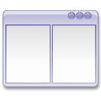
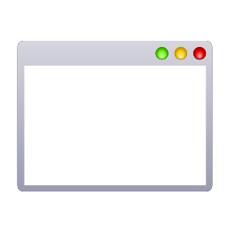

tmux
for curious
Anyone here have used GNU screen?
tmux =
Terminal Multiplexer

How to install
Use your favorite package manager
The package should be there under "tmux"
How to start
> tmux
Starts a
new session, with
one window and
one pane.
Each command in tmux starts with this
ctrl + B
followed by another key
For example like this:
ctrl + B , ?
which shows the list of commands
(or cheatsheet as lazy students call it)
Panes

Split panes
Creates new panes by splitting them
Horizontally
ctrl + B , "
Vertically
ctrl + B , %
Switch panes
ctrl + B , arrow keys
Repeat with arrow keys for ultimate focus combo
Resize panes
Place thy focus on the pane that you want resized, followed by the following incantation
ctrl + B , alt + arrow keys
Also repeat for ultimate resize combo
Demo Time
So what can you do with this?
#1 Work in different panels such as editor in one and commandline in the other.
#2 tailing a log file
> tail -f /var/log/{logfile}
Quite useful, really.
Such as apache log files
or cron job log (/var/log/syslog)
Windows

How to Create Windows
ctrl + B , C
C as in Create. OH! I GET IT! Fair enough...
Window Switching
…or peeking through neighbour windows
Next Window:
ctrl + B , N
Previous Window
ctrl + B , P
By Window Index
ctrl + B , '
Suggestive Demo Time
So what can you do with this?
#3 Hide some long-running processes in other windows
Long Running Processes?
> sudo apt-get install ...
Installing packages
> make
Compiling stuff
And more…
Sessions

Detach that session!
ctrl + B , D
Quits tmux and puts the process in the background
Don't worry, all the work you've done and any processes running are still there…
Go back to that session!
> tmux ls
Lists sessions
> tmux attach [session]
Attach session
Did you know?
You can log in to another's session and pair program with them
Mouse-Free Development:
Cool Youtube Video
Extras
I'm actually DONE here…
But wait… there's more!
Scrolling in panes
There are settings for this but can also be done with this:
ctrl + B , [ or PgUp
Goes into copy mode which can be scrolled with PgUp/PgDn and arrow keys. Exit the mode with q or esc
Show the time
Is it Tea Time Yet?ctrl + B , T